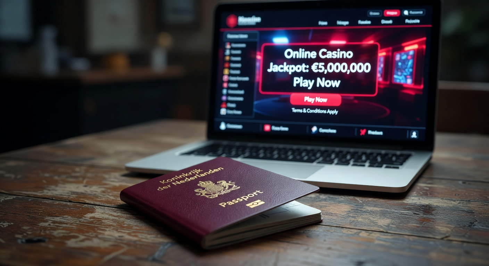
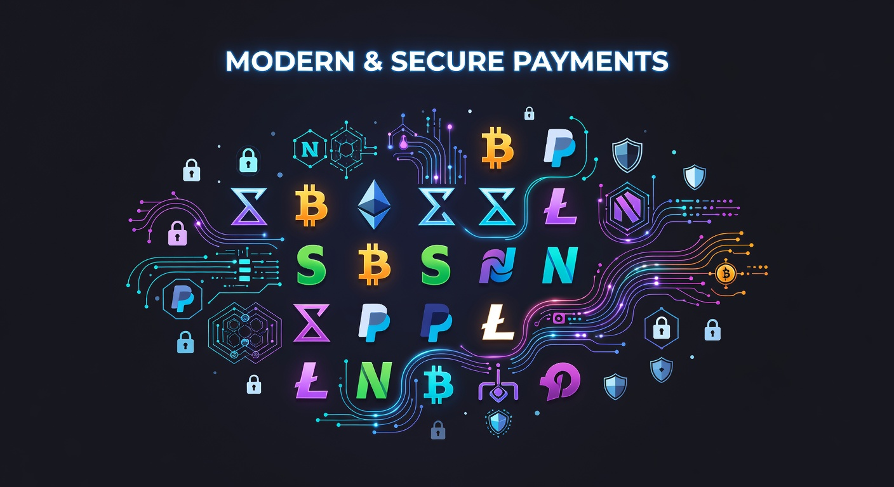
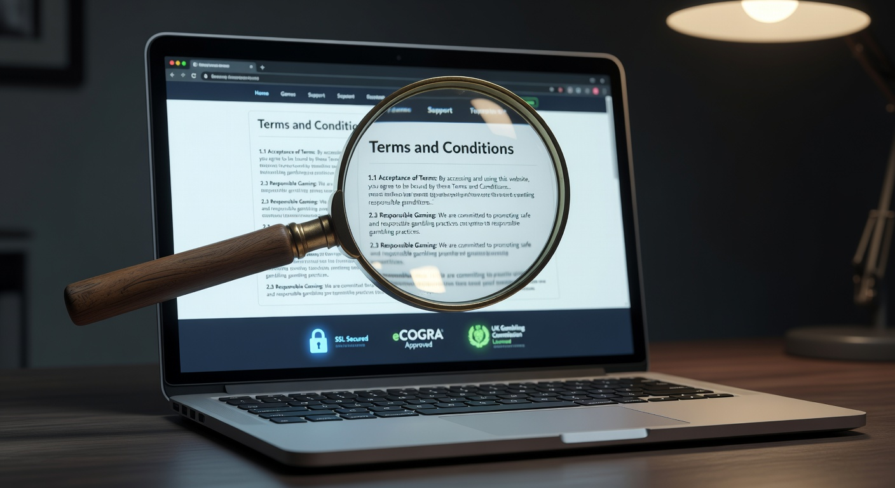
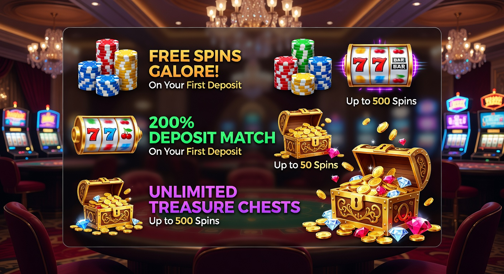

PayPal Casino zonder CRUKS: Alles wat je moet weten over veilig gokken
De wereld van online kansspelen in Nederland is in 2026 drastisch veranderd. Met de voortdurende evolutie van de Kansspelautoriteit (KSA) en de strikte regelgeving rondom het Centraal Register Uitsluiting Kansspelen (CRUKS), zoeken veel spelers naar meer vrijheid. Een paypal casino zonder cruks biedt een interessante uitweg voor diegenen die op zoek zijn naar een soepele speelervaring zonder de verstikkende beperkingen van de lokale overheid. In dit uitgebreide artikel duiken we diep in de wereld van buitenlandse aanbieders, de voordelen van PayPal en hoe je in 2026 veilig kunt blijven spelen.
Hoewel de Nederlandse markt strikt gereguleerd is, blijft de vraag naar een paypal casino zonder cruks onverminderd groot. Spelers waarderen de snelheid van transacties en de extra laag privacy die een e-wallet zoals PayPal biedt. Bovendien bieden internationale platformen vaak een breder scala aan spellen van topontwikkelaars zoals NetEnt en Pragmatic Play, die soms beperkt zijn bij lokale aanbieders vanwege strenge Nederlandse wetgeving. In deze gids leggen we uit hoe je de beste keuzes maakt en waar je op moet letten bij het selecteren van een betrouwbaar platform.
Wat is een PayPal casino zonder CRUKS precies?
Een paypal casino zonder cruks is een online gokplatform dat niet is aangesloten bij het Nederlandse uitsluitingsregister en waar spelers kunnen betalen en uitbetalen via PayPal. Omdat deze casino's vaak opereren onder licenties uit andere rechtsgebieden, zoals de MGA (Malta Gaming Authority) of Curaçao eGaming, vallen zij buiten de directe jurisdictie van de Nederlandse KSA. Dit betekent dat zij niet verplicht zijn om spelers te controleren in de CRUKS-database, wat zorgt voor een snellere toegang tot het spelaanbod.
Het concept van een paypal casino zonder cruks is in 2026 geëvolueerd naar een hybride model. Veel van deze sites maken gebruik van geavanceerde KYC-processen (Know Your Customer) die minder invasief zijn dan de Nederlandse iDIN-verificatie, maar nog steeds een hoge mate van veiligheid bieden. Spelers die per ongeluk in het register terecht zijn gekomen of die simpelweg hun privacy willen behouden, vinden hier een platform dat hen met open armen ontvangt zonder de constante monitoring van de overheid.
Waarom kiezen spelers voor goksites buiten Nederland?
De keuze voor een paypal casino zonder cruks is vaak gebaseerd op een behoefte aan autonomie. In Nederland zijn de regels omtrent stortingslimieten en speeltijd in 2026 nog strenger geworden. Voor de ervaren speler kan dit aanvoelen als betutteling. Bij een online casino zonder registratie of een internationaal platform zijn deze limieten vaak veel ruimer, waardoor je meer controle hebt over je eigen budget en speelstijl.
Bovendien is het spelaanbod bij een paypal casino zonder cruks vaak superieur. Waar Nederlandse legale casino's soms beperkt worden in de soorten bonussen of de snelheid van gokkasten (bijvoorbeeld de 'spin-vertraging'), kennen buitenlandse sites deze beperkingen niet. Dit resulteert in een dynamischere ervaring waarbij de RTP (Return to Player) vaak ook competitiever is. Voor veel Nederlanders is de overstap naar een casino buitenland zonder cruks dan ook een logische stap om maximaal plezier uit hun hobby te halen.
Geen beperkingen van het Centraal Register
Het grootste voordeel van een paypal casino zonder cruks is uiteraard het ontbreken van de koppeling met het uitsluitingsregister. In Nederland kan een speler door verschillende redenen in CRUKS terechtkomen, soms zelfs onvrijwillig door interventie van een aanbieder. Dit blokkeert de toegang tot alle legale Nederlandse casino's voor minimaal zes maanden. Een legale casino zonder cruks (geautoriseerd door andere EU-landen) biedt hier de oplossing voor spelers die van mening zijn dat zij weer verantwoord kunnen spelen.
Privacy en gebruiksgemak van e-wallets
PayPal staat wereldwijd bekend om zijn veiligheid. Wanneer je speelt bij een paypal casino zonder cruks, hoef je je bankgegevens niet direct te delen met het online casino. Dit verkleint de kans op fraude en zorgt ervoor dat goktransacties niet direct zichtbaar zijn op je reguliere bankafschrift. Volgens Forbes bieden digitale wallets zoals PayPal een essentiële beschermingslaag voor consumenten in de digitale economie van 2026.
Is het legaal om te spelen bij deze aanbieders?

De legaliteit van een paypal casino zonder cruks is een complex onderwerp in 2026. Vanuit het perspectief van de Nederlandse speler is het niet strafbaar om een account aan te maken bij een buitenlandse aanbieder. De restricties van de KSA richten zich voornamelijk op de aanbieders zelf; zij mogen hun diensten niet actief promoten op de Nederlandse markt zonder licentie. Echter, als speler ben je vrij om te kiezen waar je speelt, mits het casino spelers uit jouw regio accepteert.
Het is wel belangrijk om te begrijpen dat je bij een paypal casino zonder cruks minder bescherming geniet van de Nederlandse overheid. Mocht er een geschil ontstaan, dan kun je niet aankloppen bij de KSA. Daarom is het essentieel om te kiezen voor platformen met een sterke reputatie en een geldige licentie van de MGA. Deze toezichthouders hanteren strenge regels voor eerlijk spel en de bescherming van spelersgelden, wat een beste online casino onderscheidt van malafide websites.
Beste alternatieve betaalmethoden voor Nederlandse spelers

Hoewel veel mensen specifiek zoeken naar een paypal casino zonder cruks, is PayPal niet altijd de enige of beste optie bij buitenlandse aanbieders. PayPal hanteert namelijk zelf ook een strikt beleid ten opzichte van gokbedrijven en werkt vaak alleen samen met lokaal gelicentieerde partijen. Gelukkig zijn er in 2026 tal van alternatieven die net zo snel en veilig zijn, zoals Volt, Trustly en diverse cryptovaluta.
Deze methoden bieden vaak dezelfde voordelen als een paypal casino zonder cruks: directe stortingen, snelle uitbetalingen en een hoge mate van anonimiteit. Vooral de opkomst van "open banking" via aanbieders als Volt heeft het landschap veranderd, waardoor je direct vanaf je Nederlandse bankrekening kunt storten zonder tussenkomst van iDEAL of iDIN-verificatie bij het casino zelf.
Volt en Trustly als snelle opties
Voor wie op zoek is naar de snelheid van een paypal casino zonder cruks, zijn Volt en Trustly uitstekende keuzes. Deze diensten fungeren als een brug tussen je bank en het casino. Ze maken gebruik van de nieuwste Europese betaalrichtlijnen (PSD2) om transacties in real-time te verwerken. Dit is vooral populair bij een casino zonder registratie, waarbij je storting direct je identiteit verifieert, zodat je geen langdurige aanmeldformulieren hoeven in te vullen.
Cryptovaluta voor maximale anonimiteit
In 2026 zijn Bitcoin, Ethereum en USDT niet meer weg te denken uit de gokwereld. Veel spelers die een paypal casino zonder cruks overwegen, stappen uiteindelijk over op crypto vanwege de ongekende privacy. Transacties zijn nagenoeg onmogelijk te blokkeren door centrale instanties, en de uitbetalingen worden vaak binnen enkele minuten verwerkt. Dit maakt een casino buitenland zonder cruks met crypto-ondersteuning zeer aantrekkelijk voor privacy-bewuste gokkers.
Hoe herken je een betrouwbaar online casino zonder CRUKS?

Veiligheid moet altijd je hoogste prioriteit zijn wanneer je buiten de Nederlandse gereguleerde markt speelt. Een betrouwbaar paypal casino zonder cruks herken je aan verschillende kenmerken. Ten eerste moet er een duidelijke licentie aanwezig zijn, meestal onderaan de website vermeld. Je kunt deze licentie vaak verifiëren op de website van de betreffende autoriteit, zoals de Malta Gaming Authority.
Daarnaast kijken we naar de softwareleveranciers. Grote namen zoals NetEnt, Play’n GO en Pragmatic Play werken alleen samen met casino's die aan hun integriteitseisen voldoen. Als je deze spellen ziet, is dat vaak een goed teken voor een beste online casino zonder cruks voor nederlanders 2023 (en nu dus ook in 2026). Ook de aanwezigheid van een responsieve klantenservice en positieve recensies op onafhankelijke platforms zijn cruciaal bij het beoordelen van een paypal casino zonder cruks.
Licenties van de MGA en Curaçao eGaming
Een licentie uit Malta (MGA) wordt over het algemeen als de gouden standaard beschouwd binnen Europa voor een paypal casino zonder cruks. Zij bieden een hoge mate van spelersbescherming. Licenties uit Curaçao zijn in 2026 ook aanzienlijk verbeterd door nieuwe lokale wetgeving, waardoor zij een uitstekend alternatief bieden voor casino's die ook cryptovaluta willen accepteren. Beide autoriteiten zorgen ervoor dat de RTP van spellen regelmatig wordt gecontroleerd door onafhankelijke instanties zoals eCOGRA.
Klantenservice en spelersbeoordelingen
Een beste online casino investeert in zijn klanten. Test altijd de live chat voordat je een grote storting doet bij een paypal casino zonder cruks. Reageren ze snel? Word je in het Engels of Nederlands geholpen? Kijk ook naar de ervaringen van anderen met de term zonder cruks hoe zij hun winsten hebben uitbetaald gekregen. Websites zoals Trustpilot of gespecialiseerde casinofora kunnen waardevolle inzichten bieden in de betrouwbaarheid van een aanbieder op de lange termijn.
Populaire bonussen bij buitenlandse casino's

Een van de grootste trekpleisters van een paypal casino zonder cruks is de royale bonusstructuur. In Nederland zijn bonussen vaak beperkt tot een kleine welkomstbonus voor nieuwe spelers van 24 jaar of ouder. In het buitenland gelden deze restricties niet. Je kunt rekenen op enorme welkomstpakketten, vaak 100 tot 500 procent bovenop je eerste storting, aangevuld met honderden gratis spins op populaire slots.
Bovendien bieden deze platformen vaak loyaliteitsprogramma's en cashback-regelingen aan. Dit betekent dat je een deel van je verliezen wekelijks terugkrijgt, wat bij een online casino in Nederland wettelijk verboden is. Het is echter wel belangrijk om de kleine lettertjes te lezen. De inzetvereisten (wagering) bij een paypal casino zonder cruks kunnen variëren, dus zorg dat je weet hoe vaak je een bonus moet rondspelen voordat je winst kunt opnemen.
| Type Bonus | Nederlands Casino (KSA) | PayPal Casino zonder CRUKS |
|---|---|---|
| Welkomstbonus | Beperkt (vaak max €100) | Hoog (vaak tot €1000+) |
| Gratis Spins | Gelimiteerd aantal | Vaak 100+ bij registratie |
| Cashback | Verboden | Beschikbaar (5% - 20%) |
| Leeftijdsgrens | Strict 24+ voor bonussen | Meestal 18+ |
Stappenplan: Beginnen met spelen zonder restricties
Wil je direct aan de slag bij een paypal casino zonder cruks? Volg dan dit eenvoudige stappenplan om veilig en snel te beginnen. In 2026 is het proces gestroomlijnder dan ooit tevoren, maar zorgvuldigheid blijft geboden om je persoonlijke gegevens te beschermen.
- Kies een aanbieder: Bekijk onze beste casino zonder cruks nederland 2026 toplijst en selecteer een casino dat PayPal of een vergelijkbare e-wallet accepteert.
- Account aanmaken: Vul je gegevens in. Bij een casino zonder account kun je deze stap vaak overslaan en direct storten.
- Verifieer je e-mail: Klik op de bevestigingslink in je inbox om je account te activeren.
- Doe een storting: Ga naar de kassa, selecteer PayPal (of alternatieven als Volt/Trustly) en kies je bedrag. Let op: soms is er een online casino zonder cruks 5 euro minimale storting mogelijk.
- Claim je bonus: Vergeet niet de welkomstbonus en eventuele gratis spins te activeren tijdens het stortingsproces.
- Begin met spelen: Je bent nu klaar om te genieten van je favoriete spellen zonder CRUKS-beperkingen!
Vergelijkingstabel: Nederlandse vs Buitenlandse sites
Om een weloverwogen keuze te maken voor een paypal casino zonder cruks, is het handig om de belangrijkste verschillen op een rij te hebben. Het jaar 2026 heeft laten zien dat beide markten hun eigen voor- en nadelen hebben, afhankelijk van wat jij als speler belangrijk vindt: veiligheid via de staat of persoonlijke vrijheid.
| Kenmerk | KSA Gelicentieerd | Zonder CRUKS (Buitenland) |
|---|---|---|
| Toegang | Onderhevig aan CRUKS | Altijd toegankelijk |
| Identificatie | iDIN (verplicht) | E-mail / KYC / Crypto |
| Spelaanbod | Gecontroleerd / Beperkt | Onbeperkt / Wereldwijd |
| Betaalsnelheid | Direct (meestal) | Direct met PayPal/Volt |
| Stortingslimieten | Wettelijk vastgelegd | Zelf in te stellen |
Spelaanbod bij een paypal casino zonder cruks
Wanneer je kiest voor een paypal casino zonder cruks, gaat er een wereld van entertainment voor je open. In tegenstelling tot de Nederlandse markt, waar elk spel individueel gekeurd moet worden, hebben internationale aanbieders vaak duizenden titels in hun bibliotheek. Je vindt hier de nieuwste innovaties op het gebied van live casino games, waaronder spectaculaire spelshows van Evolution Gaming.
Bovendien is een paypal casino zonder cruks de plek waar je de hoogste jackpots kunt vinden. De progressieve jackpots van Microgaming en NetEnt zijn vaak gekoppeld aan een wereldwijd netwerk, waardoor de prijzenpotten in de tientallen miljoenen euro's kunnen lopen. Voor de liefhebbers van klassieke tafelspellen zijn er talloze varianten van Roulette, Blackjack en Baccarat beschikbaar, vaak met lagere huisvoordelen en een hogere RTP dan in fysieke casino's in Nederland.
Merken zoals Betninja zijn in 2026 populair geworden door hun uitgebreide sportsbook in combinatie met casino-secties. Hier kun je niet alleen inzetten op voetbal of Formule 1, maar ook op e-sports, wat bij veel Nederlandse aanbieders nog in de kinderschoenen staat. Het gemak van een alles-in-één het platform waar je met PayPal kunt betalen, maakt de ervaring compleet.
Veiligheid en verantwoord spelen in 2026
Hoewel een paypal casino zonder cruks niet is aangesloten bij het Nederlandse register, betekent dit niet dat zij geen oog hebben voor verantwoord spelen. De meeste gerenommeerde internationale casino's bieden hun eigen uitsluitingstools aan. Je kunt jezelf voor een bepaalde periode blokkeren of limieten instellen voor je stortingen en verliezen. Dit is een essentieel onderdeel van een beste online casino ervaring in 2026.
Het is belangrijk om te onthouden dat gokken een vorm van entertainment moet blijven. Voor meer informatie over de risico's van kansspelverslaving kun je terecht op de website van de Wikipedia over Online Gambling, waar de psychologische aspecten en preventiestrategieën uitgebreid worden besproken. Speel alleen met geld dat je kunt missen en wees eerlijk naar jezelf toe over je speelgedrag bij een paypal casino zonder cruks.
De opkomst van 'Casino zonder Account' technologie
Een trend die in 2026 echt is doorgebroken bij het paypal casino zonder cruks is de "No Account" technologie. Hierbij hoef je geen traditioneel account meer aan te maken. Je stort geld via een dienst zoals Trustly of PayPal, en het casino ontvangt direct de nodige verificatiegegevens van je betalingsprovider. Dit wordt vaak aangeduid als een online casino zonder registratie.
Dit proces is niet alleen veel sneller, maar ook veiliger. Je hoeft geen kopieën van je paspoort of nutsrekeningen te uploaden naar servers in het buitenland, wat je privacy ten goede komt. Voor veel spelers is dit de ultieme vorm van een casino met moderne faciliteiten. Het combineert de snelheid van een fysiek casino met het gemak van online spelen, zonder de rompslomp van CRUKS-controles.
Veelgestelde vragen over gokken met PayPal
Is een paypal casino zonder cruks veilig?
Ja, mits het casino beschikt over een geldige licentie van bijvoorbeeld de MGA of Curaçao. PayPal zelf voert ook controles uit op de bedrijven waarmee ze samenwerken, wat een extra laag van vertrouwen biedt.
Kan ik met iDEAL betalen bij een buitenlands casino?
iDEAL is in 2026 voornamelijk gereserveerd voor casino's met een KSA-licentie. Echter, veel casino buitenland zonder cruks aanbieders gebruiken alternatieven zoals Volt of Trustly, die exact hetzelfde werken als iDEAL via je eigen bank-app.
Zijn winsten bij een paypal casino zonder cruks belast?
In Nederland ben je in principe kansspelbelasting verschuldigd over winsten bij casino's buiten de EU. Voor casino's binnen de EU hangt dit af van de actuele wetgeving in 2026, maar vaak is de belasting al door de aanbieder afgedragen als zij binnen de EER gevestigd zijn.
Wat als een casino mijn PayPal storting weigert?
Dit kan gebeuren als PayPal strikte regio-beperkingen hanteert. In dat geval kun je vaak eenvoudig uitwijken naar andere e-wallets zoals Skrill of Neteller, of kiezen voor een directe bankoverschrijving via Volt.
Kan ik mezelf uitsluiten bij een casino zonder CRUKS?
Ja, elk betrouwbaar paypal casino zonder cruks heeft een eigen 'Responsible Gaming' sectie waar je limieten kunt instellen of je account permanent kunt sluiten.
Conclusie: De toekomst van het paypal casino zonder cruks
In 2026 is de markt voor online kansspelen volwassener dan ooit. Het paypal casino zonder cruks vervult een belangrijke rol voor spelers die waarde hechten aan privacy, snelheid en een onbeperkt spelaanbod. Hoewel de Nederlandse overheid probeert de markt te kanaliseren via de KSA, bieden buitenlandse aanbieders met MGA-licenties een veilig en vaak superieur alternatief voor de kritische consument.
Of je nu kiest voor de enorme bonussen, de afwezigheid van restricties of het gemak van betalen met PayPal, zorg er altijd voor dat je onderzoek doet naar de aanbieder. Een beste casino zonder cruks nederland 2026 toplijst kan je helpen om de rotte appels te vermijden. Onthoud dat verantwoord spelen de sleutel is tot langdurig plezier in elk online casino, of dit nu binnen of buiten de landsgrenzen is. Met de juiste voorbereiding en kennis kun je optimaal genieten van alles wat de internationale gokwereld te bieden heeft.

Expert in online casino's en digitaal gokken met meer dan 8 jaar ervaring in de sector.